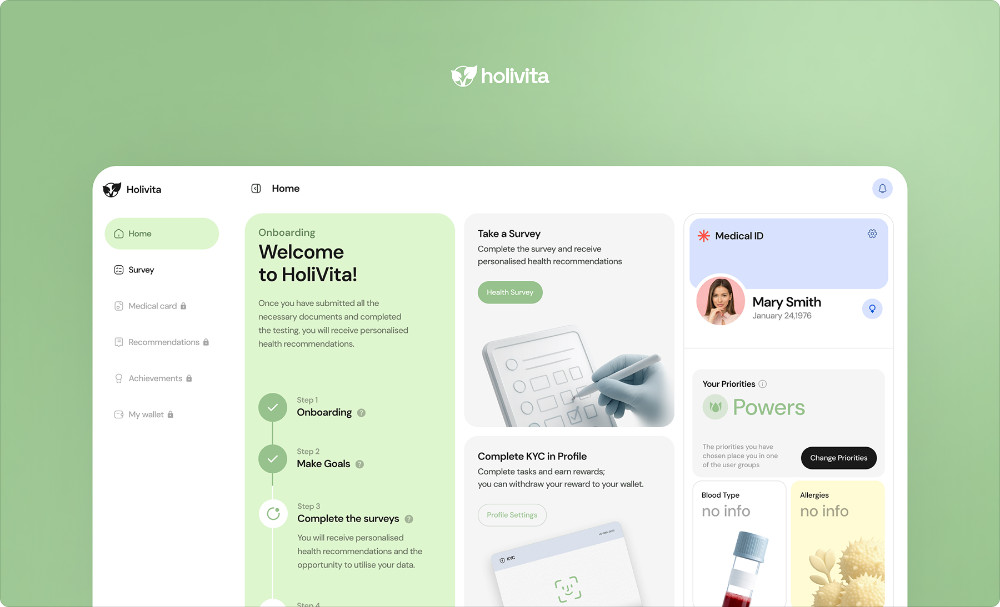
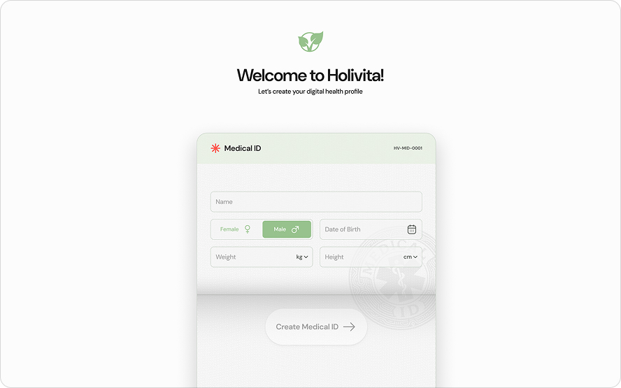
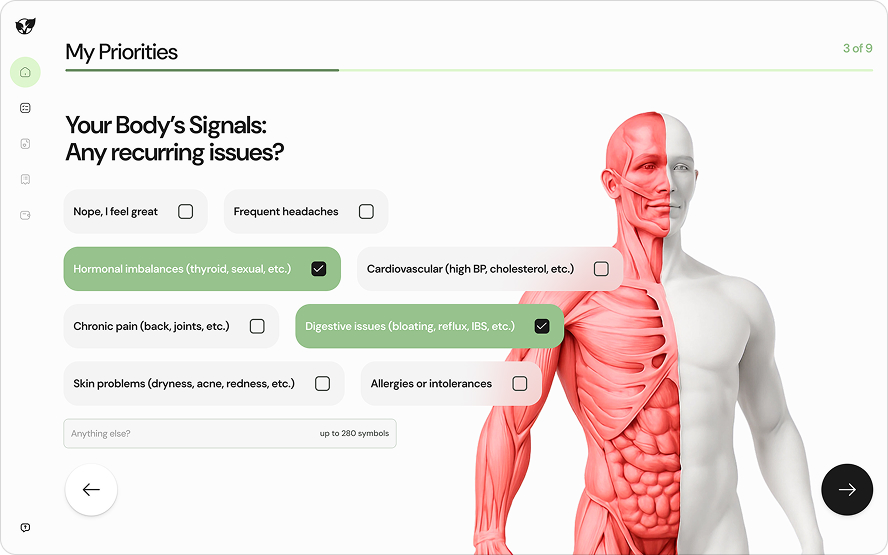
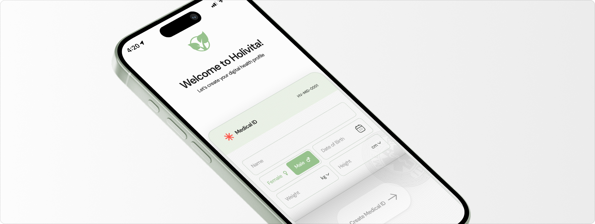

Holivita — это приложение про здоровье. Под капотом там работают умные нейросети, которые анализируют данные и предсказывают состояние организма. Когда ребята из команды рассказывали мне, как работает эта математика, звучало это абсолютно убедительно, но при этом немного волшебно. Именно от этого ощущения я отталкивался в визуале: интерфейс должен был получиться чистым и чуточку футуристичным.



Основным вызовом для меня стали дашборды. Упаковать сложную медицинскую аналитику так, чтобы она не пугала пользователя и не выглядела как пульт управления самолетом — та еще задачка. Я потратил много времени на то, чтобы данные считывались легко и интуитивно.
Забавно, но изначально я приходил на позицию Лида дизайн-системы. Однако всё было на самом старте, и «систематизировать» было попросту нечего. Поэтому я засучил рукава и сначала взялся за сам продукт.

Но свою главную задачу я не забыл: параллельно с интерфейсами я построил дизайн-систему HoloUI. Она стала полноценным внутренним продуктом. Теперь, вместо того чтобы спорить из-за отступов, команда собирает и выкатывает новые фичи на 50% быстрее.
На главную